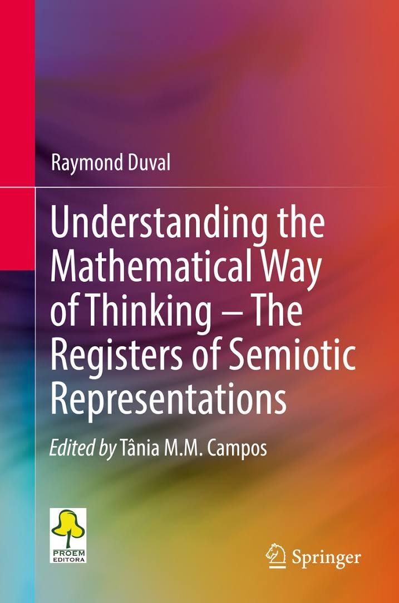
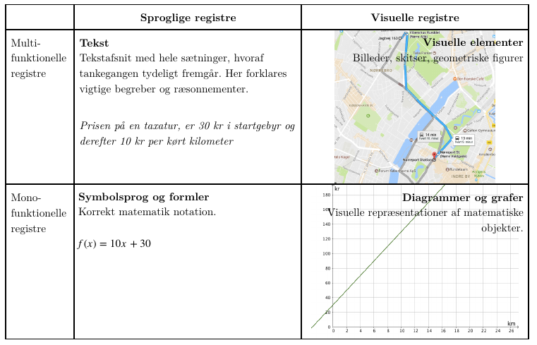
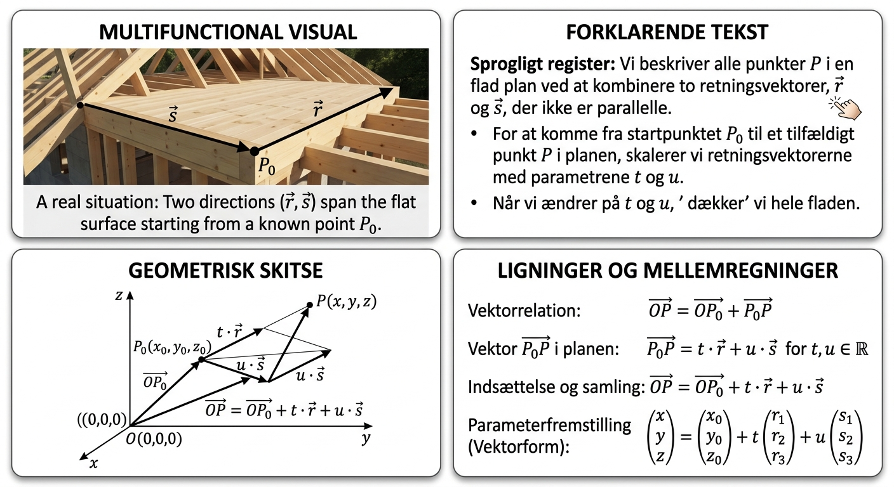
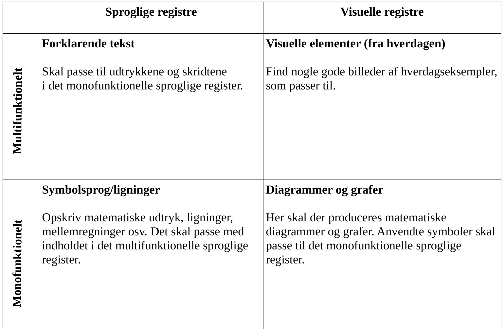

Den franske filosof og psykolog Raymond Duval har siden 1970'erne forsket i matematikdidaktik.

Det multifunktionelle sproglige register
benytter sig af det naturlige sprog (hverdagssprog) til at beskrive objekter, udsagn og situationer. Altså hverdagssprog til at beskrive noget.
Det monofunktionelle sproglige register
anvender det matematiske symbolsprog, altså tal, ligninger, tegn og algebraiske udtryk.
Det multifunktionelle visuelle register
indeholder figurer, tegninger og billeder fra virkeligheden.
Det monofunktionelle visuelle register
indeholder matematisk information i form af f.eks. grafer og diagrammer.


